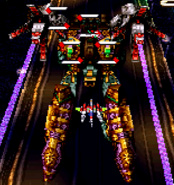

まとめ
さて、攻略して「どのマップが易しい/難しいか」という傾向が、ある程度見えてきました。まとめてみましょう。
ただし、これはあくまで私の感想です。最終的には、ご自身でやってみて判断する事をオススメします。
難しい(と感じた)マップの特徴
3面が記憶領域
難易度というよりは侵食率の話ですが、やたら上がるわりに下げにくく、しかもボスが演出で遅延させてくるありさま。
そのため、普通にやっていても25%を切れない事がままあります。ランク調整パターンなら尚のこと。
この構成で攻略する場合、以下の二択になると思います。一長一短あるため、ある程度試して決めましょう。
- 難易度調整を妥協して、後半は侵食率をガンガン下げる
- 調整失敗を覚悟で、2つ目のチェックポイントまで40%を維持する
3面が意識領域
こちらは、単純に難易度の問題です。Sem-lokeの脅威は説明した通りで、耐久力もあって事故率が大きく上がります。
できれば、2面までに設定しておきたい領域です。1面なら、むしろ簡単な部類に入ります。どうしても3面に回すなら、ラウンドディバイダーのリチャージを含めてしっかりパターン化して下さい。
感情領域or意識領域→思考領域
解説した通り、M20b1は前半に襲い来る山場です。そのため、直前の領域でラウンドディバイダーを使ってしまうと、かなりの確率でガチ避けに持ち込まれます。
特に問題なのが、この2つの領域。いずれも最終攻撃でラウンドディバイダーを決めると、ゲージが空のまま次の領域へ突入するハメになります。
対処法も、おのずと以下の二択になるでしょう。
- ノーボムでM20bを倒せるパターンを作る
- 2面なら耐久力も低いと割り切って、Sem-slutやSem-lokeの最終攻撃をノーボムで突破する
易しい(と感じた)マップの特徴
1面が意識領域
ランク調整すればどの領域もゆるやかにできますが、この領域は際立っています。
なにせWR-02Rでパターン化した際は、ボス戦突入時に1250点で固定でした。それだけ、ほとんど全ての敵を逃がせるという事です。
3面が感情領域
道中の難易度は他と比べて落ち着いており、どの面に回してもそこまで苦戦するところはありません。
ボスも最終攻撃以外おとなしく、3面なら後を気にせずラウンドディバイダーできます。オススメです。
補足：もうひとつの観点
プレイするマップを決める際、重要なポイントが曲です。
他のゲームと異なり、1面の選択がそのままメインBGMに直結します。これがモチベーションに深く影響するのは、言うまでも無いでしょう。
という訳で、まずはお気に入りの曲が聞けるマップをオススメします。
これなら多くて10マップですし、全てを試すのも少しはラクです。後は、やりやすそうなのを選べばOK。
1. M20b「Lexicon γ4b」 ↩